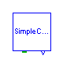
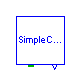
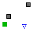
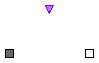
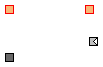

This package contains numerous connector definitions and a few partial model definitions for the major vehicle subsystems.

This chassis interface has connections for the driveline side of the transmission, the wheels, road and a vehicle speed output. This interface can be used as the constraining type in a replaceable declaration to allow easy substitution of chassis models.
partial model Chassis "Generic chassis interface"
Modelica.Mechanics.Translational.Interfaces.Flange_a road
"Road contact";
Modelica.Mechanics.Rotational.Interfaces.Flange_a power
"Driveline";
Modelica.Blocks.Interfaces.OutPort speed(final n=1);
Modelica.Mechanics.Rotational.Interfaces.Flange_a wheel;
end Chassis;
SimpleCar.Interfaces.EngineGeometryProvided

This component is used with components that provide geometry information.
connector EngineGeometryProvided "Connector to provide geometry information" output Modelica.SIunits.Length bore "Engine bore"; output Modelica.SIunits.Length stroke "Engine stroke"; output Modelica.SIunits.Length conrod "Connecting rod length"; output Modelica.SIunits.Volume Vc "Clearance volume"; output Modelica.SIunits.Area Ap "Piston area"; output Modelica.SIunits.Volume Vd "Displaced volume"; output Modelica.SIunits.Length crank "Crank length"; end EngineGeometryProvided;
SimpleCar.Interfaces.EngineGeometryRequired

This connector should be declared for each component that requires information about engine geometry.
connector EngineGeometryRequired "Connector for components or subsystems that require geometry information" input Modelica.SIunits.Length bore "Engine bore"; input Modelica.SIunits.Length stroke "Engine stroke"; input Modelica.SIunits.Length conrod "Connecting rod length"; input Modelica.SIunits.Volume Vc "Clearance volume"; input Modelica.SIunits.Area Ap "Piston area"; input Modelica.SIunits.Volume Vd "Displaced volume"; input Modelica.SIunits.Length crank "Crank length"; end EngineGeometryRequired;
SimpleCar.Interfaces.Gas

This connector contains the potential and flow variables associated with the gas moving through the engine. These potentials and flows are from both the energy and mass domains.
connector Gas "Thermodynamic connector" Modelica.SIunits.Pressure P "Gas pressure"; Modelica.SIunits.Temperature T "Gas temperature"; flow Modelica.SIunits.MassFlowRate mdot "Mass flow rate"; flow Modelica.SIunits.HeatFlowRate q "Heat flow rate"; end Gas;
SimpleCar.Interfaces.GearSelectorOutput

This connector is an output from any transmission shifting model.
connector GearSelectorOutput "Controller indicated gear selection" output Integer gear; end GearSelectorOutput;
SimpleCar.Interfaces.GearSelectorInput

This connectoris used as an input for transmissions. The connector contains information about what gear the transmission should be in.
connector GearSelectorInput "Gear selection input for transmissions" input Integer gear; end GearSelectorInput;
SimpleCar.Interfaces.Transmission
The transmission interface contains a connection to the engine, a connection to the driveline and a gear selector input. This interface is defined so that it can be used in conjunction with replaceable declarations where the transmission interface is the constraining type.
partial model Transmission "Transmission Interface" Interfaces.GearSelectorInput gear_selector; Modelica.Mechanics.Rotational.Interfaces.Flange_a driveline; Modelica.Mechanics.Rotational.Interfaces.Flange_b engine; end Transmission;
SimpleCar.Interfaces.ShiftStrategy

This is the basic interface for any shift strategy model. It connects to the axle of the car and, using the tire radius, computes the vehicles translational speed. This speed is then used to determine the appropriate gear which is then assigned to the output gear selector.
| Name | Default | Description |
|---|---|---|
| tire_radius | Tire radius [m] |
partial model ShiftStrategy "Shift strategy interface" parameter Modelica.SIunits.Length tire_radius "Tire radius"; protected Types.KilometersPerHour kph "Vehicle speed"; public Interfaces.GearSelectorOutput gear_request; Modelica.Mechanics.Rotational.Interfaces.Flange_a wheel; equation kph = der(wheel.phi)*tire_radius*60*60/1000; wheel.tau = 0; end ShiftStrategy;
SimpleCar.Interfaces.Cylinderpartial model Cylinder Modelica.Mechanics.Rotational.Interfaces.Flange_a crankshaft; Interfaces.Gas intake; Interfaces.Gas exhaust; Interfaces.EngineGeometryRequired geom; end Cylinder;
SimpleCar.Interfaces.Engine
This generic engine interface includes a connection for the crankshaft, the intake system, the exhause system and an input for engine geometry information. This interface can be used as the constraining type on replaceable declaration to allow easy substitution of engine models.
partial model Engine "Generic engine interface" Modelica.Mechanics.Rotational.Interfaces.Flange_a crankshaft; Interfaces.Gas intake; Interfaces.Gas exhaust; Interfaces.EngineGeometryRequired engine_geometry; end Engine;